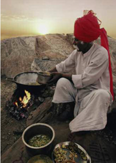
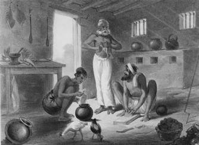
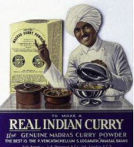
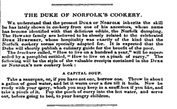
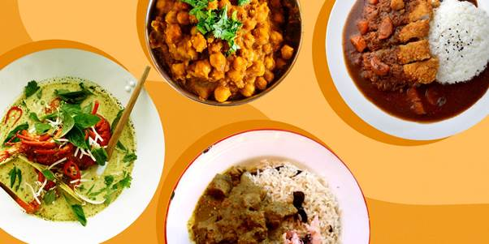
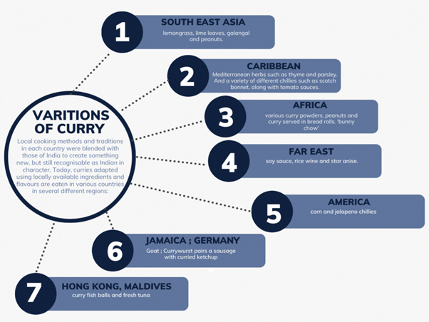

“THE JOURNEY OF KALI TO CURRY AROUND THE GLOBE”
It’s only equitable to say that curry has been a household name for almost all of Asia for centuries now! For some other though it may be a typically Indian food paste, or anything that is so scalding hot that it will burn your mouth. But in context do we really know the voyage it had to travel to reach to us, all the way from India. If not then let’s sit for a ride across the world.
Contemplation to the word “curry”?
What is curry? As a person advances from a region to another, the taste of curry will differ, the recipe will vary while the only thing that remains in common are the Indian spices. That’s when you know from where the word and the dish originated – INDIA.
It is claimed that the phrase is an anglicization of the Tamil word Kari, which designates a sauce created with a blend of spices., while in the English the word was believed to be originated from the Portuguese term "Caril" which was used to describe broths mixed with Indian spices, nuts, fruits, herbs, and a variety of condiments
Now how did it make its journey till here?
PRE- HISTORY BRIEF
To say of India’s cuisine, it can easily be considered as a shapeshifter – The more we are introduced to, we adapt with it. Our country food has always been modernist.

There came a period when the nation was dominated by numerous empires, each of which introduced its own food and culture. The Gupta Empire, which was influenced by Buddhism and Jainism and taught us about basic kitchen manners, forbade the intake of meat because animals were revered in several religion influencing the world.
Finally, the Portuguese and then the Dutch arrived followed by the French, bringing a large number of fruits and vegetables. The Portuguese brought with them a variety of wonderful foods that are still utilised frequently in modern cuisine
Yes, it was not until the Portuguese who had bought chillies that curry in India really had that element. One of the most important ingredients was only made possible due to the links of Portuguese forts and Goa.
ADAPTATION OF CURRY
Now you’d think of the establishment of curry to the British to be much more complicated but what it all was about is a wife who wants to send home the recipe for this " awestruck dish "she tried today and asks the Khansama(cook) what he puts in his chicken curry. She jots down all the Spices he tells her and behold the Curry Powder is born!
A key event in the history of India also coincided with the arrival of pepper: British bureaucrats arrived in India to live as they pleased. The current type curry dishes that we are familiar with today were created as a result of their love of Indian cuisine, access to spices, and adaption of local foods to suit their palates.
But how did these English curry recipes differ from Indian ones? Why does an Indian have such a different knowledge of curry than someone from the British? Why was it altered? Acceptance implies embracing something in its current state, right? Well, there’s deeper of a connection to it than it seemed to be from the overlayer.
Originally it was demonstrated that the British made every effort to maintain their "pure" Britishness in India, including their culinary preferences and abilities. However, it was not always possible to prevent such situations. It was frequently difficult to find British cuisine ingredients in India. Additionally, the majority of lower-class British administrators, frequently ate what was easily accessible locally since they couldn't hire cooks, particularly those educated in British culinary standards, and because they lacked those skills themselves.
Indian curry eventually gained a hold on all British classes in India and made its way into standard British cuisine. Even if the flavours were altered with their needs and diluted by their personalized chefs.
Just as a baby gets so obsessed after eating chips once they start eating them repeatedly, the same was the case with britishers. They were so addicted to its taste that when officials returned back home or went anywhere away from India, they needed to be assisted by their chefs. If not so possible, there were a few people who fulfilled this nostalgic felling of them back at home BRITAIN.
TRIP TO BRITAIN
Sake Dean Mahomed, an immigrant from India, launched Westminster's first Indian restaurant, known as the Hindoostane Coffee House, in 1810. (Still open) Mahomed opened the eatery with the intention of catering to the cravings for Indian curries of British imperial officers who had just returned from India.
Eventually by the 1820s, Indian curry appears not only as a food consumed by the British in India, but as a consumer good available for the British to taste and try at home. The Brighton Pavilion debuted in 1823. The Pavilion, which was constructed as a seaside getaway for the King George IV, reflecting the importance of India to the British imperial enterprise as "the brightest gem in Britain's crown."
The Royal Pavilion spawned a craze for all things Indian, and enthusiasm for Indian cuisine and culture quickly grew. Curry provided an affordable way for people who lacked the wherewithal to construct their own pavilions to participate in the craze for India.
“According to historian Uma Narayan, the growing fixation with curry might be interpreted as British people engaging in the colonial practise of "eating India" which was also a message from the imperial era suggesting that what Britain acquired, it also consumed.”

Realizing that there was a profitable market to be captured, many companies began launching their own curry powders in Britain. By the mid 1800 s, the number of companies selling Indian curry powders and pastes in Britain had mushroomed, the biggest players being W. Yates; Hickson’s and Halford’s, each claiming that their product was more authentic than the others.
 Curry became so popular that in 1845 the Duke of Norfolk, told a group of labourers that they should put a ‘pinch of curry’ into hot water to assuage their hunger, since in India ‘a vast portion of the population use it’. It was compared to as potatoes for Ireland.
Curry's relevance in the British Empire extended beyond its use as a status symbol or a cuisine for immigrants or the middle classes. Hundreds of thousands of Indian soldiers served in theatres ranging from the Western front to Burma throughout both World Wars, and curry was introduced to the British military and played a significant role for both British soldiers and sailors as well.
Indian eateries and takeaways developed into crucial components of both upscale retail districts and working-class neighbourhoods across the nation. In fact, British in 2001 declared that Chicken Tikka Masala was the country's true national dish.
Therefore, the history of Indian curries illuminates far more extensive tales of colonialism, migration, adaptation, acculturation, and globalisation. The history of Indian curry reveals the complexity of imperial relationships as each adapted to the other. The boundaries of the colonial world have changed into something that is fundamentally derived from the processes of Empire, but that is now forming a very different world.
EVOLUTION OF CURRY

Starting in 1838, Indian laborers, who signed work contracts in hopes of escaping poverty, were sent to Demerara, Mauritius, Trinidad, Guyana, Jamaica, Malaysia, Sri Lanka, parts of Africa, and Fiji. Through them, the sensation of curry was first spread.
When the British occupied South Africa, they hired servants to work on the sugar and tea plantations, primarily from South India. Because Black South Africans were prohibited from dining in non-Black restaurants during apartheid, Indian store owners converted curry into a kind of modest spicy resistance that was concealed within thinned bread rolls and sold discretely out of back doors. Curry did not, however, only spread through colonialism among the British. the Portuguese also them to colonies in contemporary Equatorial Guinea, Zanzibar, Madagascar, Mozambique, and Angola.
We all know about the favourite daily consumed dish of rice with curry in Japan. It’s is like an everyday tradition for them but it really all began during the Meiji Restoration (1868-1889), a previously isolated Japan opened up to the world, and Portuguese traders, Anglo-Indian officers, and missionaries brought curry with them.
The various colonies and good friend neighbours of Britain were also coming under the light of this new dish with the help of some famous cookbook writing of those periods, Like America, Canada, Australia.
